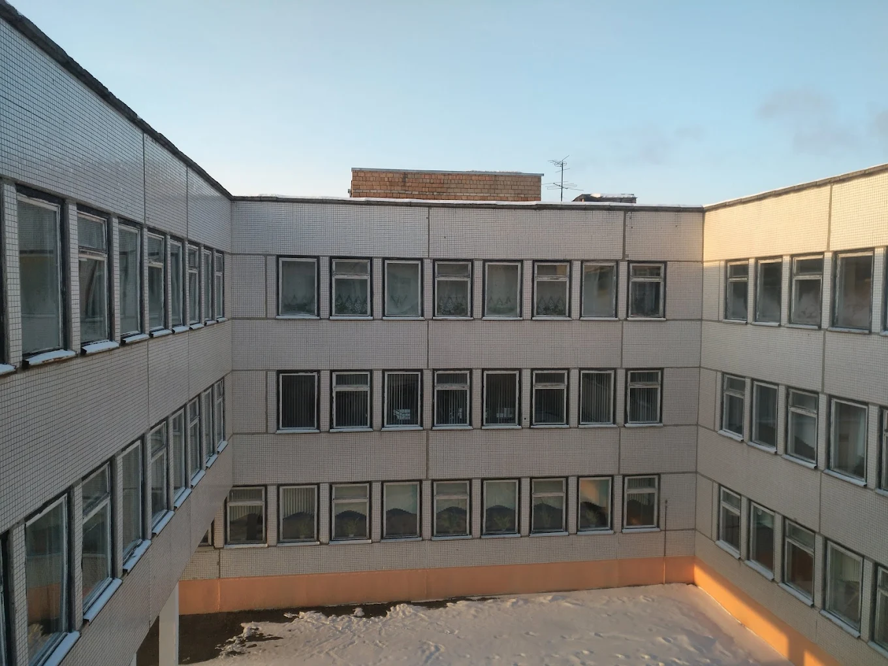

Государственное учреждение образования «Средняя школа № 10 г. Речицы»
Основные сведения
Тип учреждения: Учреждение общего среднего образования
Населенный пункт: Речица
Контактная информация
Адрес:
247500, Гомельская область, Речицкий район
г. Речица, Коммунистической роты, д. 22
Телефон: +375 2340 5 57 70
Факс: +375 2340 5 56 70
E-mail: shkola10@rechitsa-edu.gov.by
Режим работы
Понедельник – суббота: 07:30 – 20:00
Руководство
Должность
Фамилия, имя, отчество
Директор школы
Пачицкая Наталья Николаевна
Заместитель директора по учебной работе
Метель Елена Васильевна
Козлов Геннадий Фёдорович
Заместитель директора по учебной работе
Петрова Светлана Геннадьевна
Заместитель директора по воспитательной работе
Симчук Оксана Николаевна
Заместитель директора по хозяйственной работе
Москаленко Наталья Владимировна
Предварительная запись на личный прием осуществляется по телефону 8 (02340) 7 68 22 (приемная).
Об учреждении

Основными задачами государственного учреждения образования «Средняя школа №10 г. Речицы» являются:
Обеспечить дальнейший рост качества образования в соответствии с запросами учащихся, их законных представителей и тенденциями развития информационного общества.
Совершенствовать воспитательное пространство школы, содействующее развитию идейно устойчивой, нравственно и физически здоровой личности учащегося, способной к значимой социальной деятельности, осмысленному профессиональному.
Создание комфортной образовательной среды, способствующей раскрытию индивидуальных особенностей личности учащихся, их умственному и физическому развитию, формированию гражданственности и патриотизма в соответствии с актуальными потребностями общества и государства.